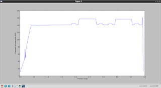

Graficar consumo de memoria con memory_profiler
Posted on dom 03 febrero 2013 in Tutorial Python • 3 min read
En el artículo anterior se explica como usar memory_profiler para evaluar el consumo de memoria de un programa Python, a continuación se explicará como graficar ese consumo utilizando matplotlib.
Este artículo se basa en el artículo Memory plots with memory_profiler.
Se hará una pequeña modificación al programa que cálcula la matriz inversa:
#!/usr/bin/env python
# -*- coding: utf-8 -*-
#Importar de memory_profiler a memory_usage
from memory_profiler import memory_usage
#Se importa numpy como np
import numpy as np
#Se crea la funcion que calcula la matriz inversa
def Inversa(n):
return np.matrix(np.random.rand(n,n)).I
#rando = np.random.rand(n, n)
#a = np.matrix(rando)
#inversa = a.I
return inversa
if __name__ == '__main__':
#Se define una lista de tamaños de la matriz
tamagno = 2 ** np.arange(0, 12)
#Se calcula la memoria usada de la funcion Inversa pasando el ultimo tamaño de la lista generada
mem_usage = memory_usage((Inversa,(tamagno[-1],)),interval=.01)
#Se imprime la lista que contiene la información de la memoria usada
print mem_usage
#Se importa pylab
import pylab as pl
#Se genera la gráfica
pl.plot(np.arange(len(mem_usage)) * .01, mem_usage, label='Matriz Inversa')
pl.xlabel('Tiempo (seg)')
pl.ylabel('Consumo de memoria (MB)')
pl.show()
El resultado de la ejecución es el siguiente:
[11.39453125, 13.39453125, 15.45703125, 17.51953125, 19.83984375, 21.90234375, 23.96484375, 26.02734375, 28.34765625, 30.41015625, 32.73046875, 34.79296875, 36.85546875, 38.91796875, 41.23828125, 43.30078125, 53.80859375, 64.37890625, 74.94921875, 48.70703125, 60.30859375, 71.91015625, 77.8046875, 81.15625, 85.0234375, 88.890625, 92.5, 96.109375, 99.71875, 103.5859375, 107.453125, 111.04296875, 114.39453125, 118.00390625, 121.61328125, 125.22265625, 128.83203125, 132.44140625, 134.76171875, 138.11328125, 139.6328125, 139.6328125, 140.5703125, 140.5703125, 140.5703125, 140.5703125, 140.5703125, 140.5703125, 140.5703125, 140.4609375, 140.4609375, 140.4609375, 139.953125, 140.4609375, 140.4609375, 140.4609375, 140.4609375, 140.4609375, 140.4609375, 140.4609375, 140.4609375, 140.20703125, 140.20703125, 139.953125, 140.20703125, 140.20703125, 140.4609375, 140.4609375, 140.4609375, 140.4609375, 140.4609375, 140.4609375, 140.6640625, 140.6640625, 140.6640625, 140.05078125, 140.55859375, 140.55859375, 140.55859375, 140.55859375, 140.55859375, 140.55859375, 140.625, 140.625, 140.625, 140.625, 140.05078125, 140.55859375, 140.55859375, 140.55859375, 140.55859375, 140.55859375, 140.55859375, 140.05078125, 140.55859375, 140.55859375, 140.55859375, 140.55859375, 140.55859375, 140.55859375, 140.05078125, 140.55859375, 140.55859375, 140.55859375, 140.55859375, 140.55859375, 140.359375, 140.61328125, 140.61328125, 140.61328125, 140.61328125, 140.61328125, 140.7265625, 140.7265625, 140.7265625, 140.7265625, 140.7265625, 140.7265625, 140.7265625, 140.7265625, 140.7265625, 140.7265625, 140.7265625, 140.7265625, 140.7265625, 140.7265625, 140.7265625, 140.7265625, 140.7265625, 140.7265625, 140.7265625, 140.7265625, 140.7265625, 140.7265625, 140.7265625, 140.7265625, 140.7265625, 140.7265625, 140.7265625, 140.7265625, 140.7265625, 140.7265625, 140.7265625, 140.7265625, 140.7265625, 140.7265625, 140.7265625, 140.7265625, 140.7265625, 140.7265625, 140.7265625, 140.7265625, 140.7265625, 140.7265625, 140.7265625, 140.7265625, 140.7265625, 140.7265625, 140.7265625, 140.7265625, 140.7265625, 140.7265625, 140.7265625, 140.7265625, 140.7265625, 140.7265625, 140.7265625, 140.75, 140.75, 140.75, 140.75, 140.75, 140.75, 140.75, 140.75, 140.75, 140.75, 140.75, 140.75, 141.26171875, 141.26171875, 141.26171875, 141.26171875, 140.75, 140.75, 141.26171875, 144.8671875, 144.8671875, 144.8671875, 144.8671875, 144.8671875, 144.8671875, 144.8671875, 144.8671875, 144.8671875, 144.8671875, 144.8671875, 144.8671875, 144.8671875, 144.8671875, 144.8671875, 142.80859375, 140.75, 140.75, 140.75, 141.26171875, 141.26171875, 141.26171875, 141.26171875, 140.8359375, 149.08203125, 149.08203125, 153.4609375, 157.328125, 157.328125, 157.328125, 157.328125, 157.328125, 157.328125, 157.328125, 157.328125, 157.328125, 157.328125, 157.328125, 157.328125, 157.328125, 157.328125, 157.328125, 157.328125, 157.328125, 157.328125, 157.328125, 157.328125, 157.328125, 157.328125, 157.328125, 157.328125, 157.328125, 157.328125, 157.328125, 157.328125, 157.328125, 157.328125, 157.328125, 157.328125, 157.328125, 157.328125, 157.328125, 157.328125, 157.328125, 157.328125, 157.328125, 157.328125, 157.328125, 157.328125, 157.328125, 157.328125, 157.328125, 157.328125, 157.328125, 157.328125, 157.328125, 157.328125, 157.328125, 157.328125, 157.328125, 157.328125, 157.328125, 157.328125, 157.328125, 157.328125, 157.328125, 157.328125, 157.328125, 149.08203125, 149.08203125, 140.8359375, 140.8359375, 141.34765625, 141.34765625, 141.34765625, 141.34765625, 141.34765625, 142.89453125, 142.89453125, 143.6640625, 144.953125, 144.953125, 144.953125, 144.953125, 144.953125, 144.953125, 144.953125, 144.953125, 144.953125, 144.953125, 144.953125, 142.89453125, 142.89453125, 142.89453125, 142.89453125, 140.8359375, 140.8359375, 140.8359375, 140.8359375, 140.8359375, 140.8359375, 140.8359375, 140.8359375, 140.8359375, 140.8359375, 140.8359375, 141.34375, 141.34375, 141.34375, 140.83984375, 140.83984375, 140.83984375, 142.8984375, 143.41015625, 144.95703125, 144.95703125, 144.95703125, 144.95703125, 144.95703125, 144.95703125, 144.95703125, 144.95703125, 144.95703125, 144.95703125, 144.95703125, 144.95703125, 142.8984375, 142.8984375, 140.84375, 140.84375, 140.84375, 141.35546875, 141.35546875, 141.35546875, 141.35546875, 140.84375, 144.96484375, 148.83203125, 156.3046875, 157.078125, 157.078125, 157.078125, 157.078125, 157.078125, 157.078125, 157.078125, 157.078125, 157.078125, 157.078125, 157.078125, 157.078125, 157.078125, 157.078125, 157.078125, 157.078125, 157.078125, 157.078125, 157.078125, 157.078125, 157.078125, 157.078125, 157.078125, 157.078125, 157.078125, 157.078125, 157.078125, 157.078125, 157.078125, 157.078125, 157.078125, 157.078125, 157.078125, 157.078125, 157.078125, 157.078125, 157.078125, 157.078125, 157.078125, 157.078125, 157.078125, 157.078125, 157.078125, 157.078125, 157.078125, 157.078125, 157.078125, 157.078125, 157.078125, 157.078125, 157.078125, 157.078125, 157.078125, 157.078125, 157.078125, 157.078125, 157.078125, 157.078125, 149.08984375, 149.08984375, 140.84375, 140.84375, 141.35546875, 141.35546875, 141.35546875, 141.35546875, 140.84375, 142.90234375, 142.90234375, 144.9609375, 144.9609375, 144.9609375, 144.9609375, 144.9609375, 144.9609375, 144.9609375, 144.9609375, 144.9609375, 144.9609375, 144.9609375, 144.9609375, 144.9609375, 144.9609375, 142.90234375, 142.90234375, 140.84375, 140.84375, 140.84375, 141.35546875, 141.35546875, 141.35546875, 141.35546875, 140.84375, 140.84375, 141.765625, 150.015625, 160.84375, 161.35546875, 76.8515625, 12.84375]
La gráfica que se genera es la siguiente:

Se puede notar en la gráfica que se incrementa el consumo de memoria rápidamente en menos de 1 segundo a aproximadamente 140MB, luego viene una estabilización con pequeños aumentos y disminuciones al valor constante hasta que se genera una caída a 12MB a los 5 segundos de ejecución.
Si desea ver más ejemplos de como graficar el consumo de memoria puede revisar el artículo el cual se baso este.
¡Haz tu donativo! Si te gustó el artículo puedes realizar un donativo con Bitcoin (BTC) usando la billetera digital de tu preferencia a la siguiente dirección: 17MtNybhdkA9GV3UNS6BTwPcuhjXoPrSzV
O Escaneando el código QR desde la billetera: